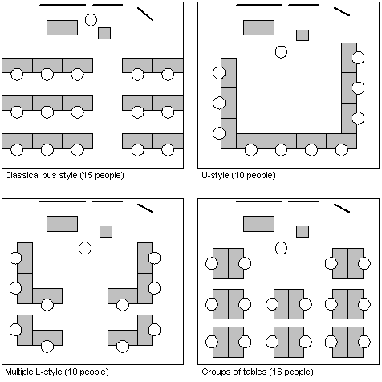

22. TABLE ARRANGEMENT **
DIFFERENT APPROACHES or WORK FORMS require different levels and ways of cooperation among the participants. The environment in which the sessions take place should explicitly support this requirement to cooperate. This is crucial for the success of a certain WORK FORM.

Therefore, arrange tables in a way that supports the selected WORK FORMS. You should either choose an arrangement that can be easily rearranged to adapt to changing WORK FORMS, or, if rearrangement is not possible, you should select one that can be used for as many WORK FORMS as possible.
Also keep in mind that the participants should feel well from a social point of view. Ideally, everybody should be able to look everybody else in the eye. Be sure to respect the minimum spatial and social distance that everybody needs. Otherwise the situation might be considered obtrusive and as a consequence, people will not feel comfortable.
Of course, rearranging the tables might not be possible in a classroom where a significant infrastructure is installed, such as computers and networks. Some of the possible arrangements are quite wasteful regarding space, and might therefore be impractical.
There are different possible table arrangements. The most generally usable one is the U-Form, where people sit on the outside, looking inward. It can be used if you use a presentational style, because everybody can look to the front. It is also well suited for discussions and collaborative work, because everybody can look everybody in the eye (including you, the teacher). This arrangement has the additional advantage that you can easily walk to every participant. A last point is, that it is not possible for some participants to sit in the last row, or: those who arrive last do not have to sit in the unpopular first row. The U-Form has the disadvantage that it wastes a lot of space.
Rearranging the tables during a seminar or even a session can be a good relief. People have to move and it can be good fun (see GAMES). During such rearrangement people have to talk to each other, making a good possibility for PERSONAL COMMUNICATION.
For pure presentations, the traditional bus style can be used: people sit in rows, everybody looking forward. This arrangement uses the available space very effectively. The most significant drawback is that people cannot look other people in the eyes, discussions and other forms of collaborative work are difficult. In addition, it is hard for you to walk to the participants, because usually the rows are quite narrow (and filled with bags, coats, etc).
For pure discussions it might make sense to sit in a circle using only chairs and no tables at all. This creates a more informal setting and can break psychological barriers. The U-Form is a quite good approximation of a circle and can often be used alternatively.
For group work, arranging the tables in groups is most suitable. A good compromise for presentation style and group work is the Multiple-L-Form. People are naturally grouped and can still look to the front.